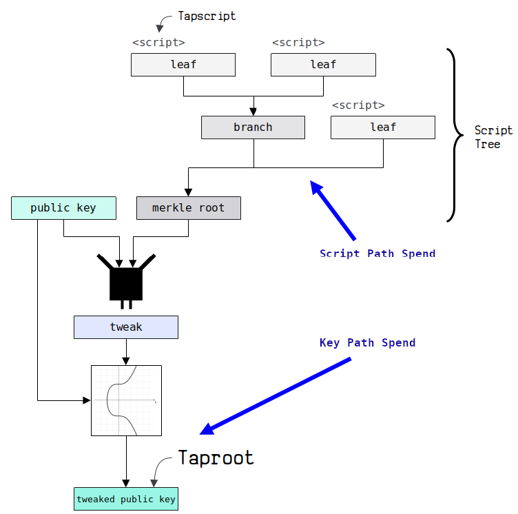
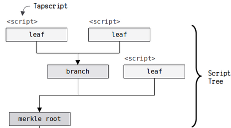
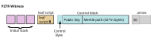
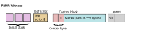
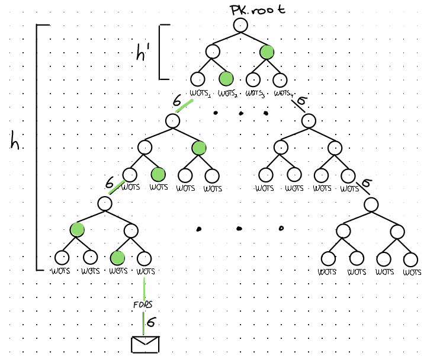
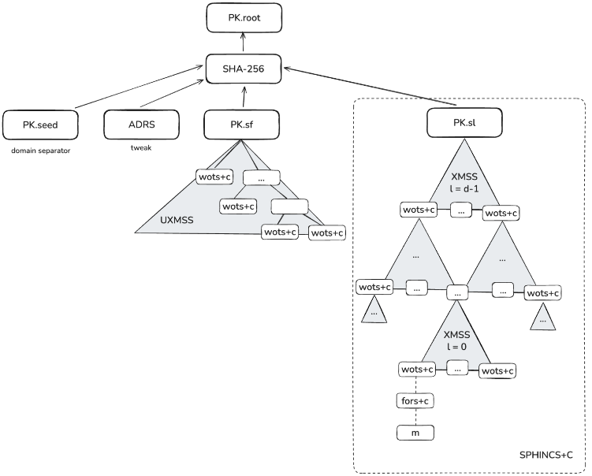

Jeff Bride
Marathon Digital (MARA)
March 2026
Source: Unchained & ARK Investment Management LLC, 2026 — based on data from Project Eleven 2026
"A smooth and effective QR transition plan for Bitcoin could take several years to execute — with more prep time inevitably leading to better security outcomes for all."
— Hunter Beast, co-author of BIP-360




✅ BIP-360 has been merged into the official Bitcoin BIP repository
| Scheme | Public Key Size | Signature Size | Verification Cycles |
|---|---|---|---|
| Schnorr (secp256k1) | 32 bytes | 64 bytes | ~50K |
| SLH-DSA-SHAKE-128s | 32 bytes | 7,856 bytes | ~4.7M |
"As an extreme thought-experiment, imagine that tomorrow a new cryptographic signature scheme FancySig is published, with all the features that Bitcoin relies on today: small signatures, fast to verify, presumed post-quantum, BIP32-like derivation, taproot-like tweaking, multisignatures, thresholds, ..."

